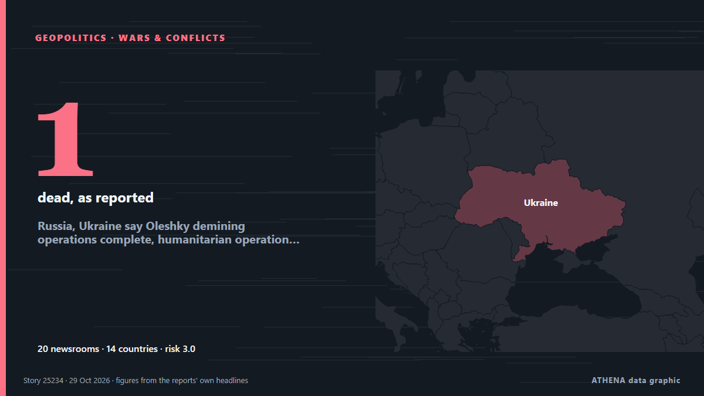

Russia, Ukraine say Oleshky demining operations complete, humanitarian operation to proceed

The localised ceasefire was announced on Oct 23. από The Straits Times
Αναφέρθηκε ανεξάρτητα από 20 μέσα σε 14 χώρες από τις 23 Οκτ, πρώτο από το Ukrainska Pravda (English)· η κάλυψη εξασθενεί. Το ATHENA εκτιμά τον κίνδυνο μέτριο (3.0/10), κυρίως λόγω της σοβαρότητας της βλάβης που περιγράφεται και της γεωγραφικής και τομεακής εμβέλειάς του. Η βεβαιότητα είναι 90% (υψηλή), καθώς το επιβεβαιώνουν 20 ανεξάρτητα μέσα με μέση αξιοπιστία πηγών 77%. Ποιοι το ανέφεραν: 18 μέσα στη χώρα Ουκρανία · Ukraine, 3 μέσα στη χώρα Σιγκαπούρη · Singapore, 3 μέσα στη χώρα Ρωσία · Russia. Η κάλυψη διήρκεσε από 23 Οκτ έως 29 Οκτ, 150 ώρες.
Γιατί έχει σημασία: Η πλήρους κλίμακας εισβολή της Ρωσίας στην Ουκρανία ξεκίνησε τον Φεβρουάριο του 2022. Η σελίδα παρακολουθεί τις μάχες, τα πλήγματα σε υποδομές και τη διπλωματία γύρω από τον πόλεμο, όπως τα καλύπτουν μέσα από όλο τον κόσμο.
Τι άλλαξε: 6 νέες αναφορές από 5 μέσα στο 24ωρο έως 29 Οκτ.
Πρώτη διατύπωση: Ukraine, Russia begin humanitarian ceasefire in Oleshky
Οι τίτλοι των ειδήσεων παρουσιάζονται στα αγγλικά, όπως δημοσιεύτηκαν.
Με μια ματιά
Επιλέγεται, βαθμολογείται και γράφεται από τη δημοσιευμένη μεθοδολογία του ATHENA. Κανένας συντάκτης δεν παρεμβαίνει σε μεμονωμένα γεγονότα. Πώς παράγεται ›
| 23 Oct 14:51 UTC | 4 |
|---|---|
| 23 Oct 20:51 UTC | 1 |
| 24 Oct 02:51 UTC | 1 |
| 24 Oct 08:51 UTC | 0 |
| 24 Oct 14:51 UTC | 0 |
| 24 Oct 20:51 UTC | 0 |
| 25 Oct 02:51 UTC | 0 |
| 25 Oct 08:51 UTC | 0 |
| 25 Oct 14:51 UTC | 0 |
| 25 Oct 20:51 UTC | 0 |
| 26 Oct 02:51 UTC | 0 |
| 26 Oct 08:51 UTC | 0 |
| 26 Oct 14:51 UTC | 1 |
| 26 Oct 20:51 UTC | 3 |
| 27 Oct 02:51 UTC | 7 |
| 27 Oct 08:51 UTC | 13 |
| 27 Oct 14:51 UTC | 2 |
| 27 Oct 20:51 UTC | 0 |
| 28 Oct 02:51 UTC | 1 |
| 28 Oct 08:51 UTC | 0 |
| 28 Oct 14:51 UTC | 0 |
| 28 Oct 20:51 UTC | 0 |
| 29 Oct 02:51 UTC | 0 |
| 29 Oct 08:51 UTC | 0 |
| 29 Oct 14:51 UTC | 5 |
| 29 Oct 20:51 UTC | 1 |
| 23 Oct 15:23 UTC | 0.0 |
|---|---|
| 24 Oct 04:21 UTC | 0.9 |
| 27 Oct 09:32 UTC | 3.5 |
| 29 Oct 20:56 UTC | 3.0 |
Γιατί αυτοί οι αριθμοί
Σημασία
Κίνδυνος
Βεβαιότητα
Η κάλυψη — ποιος το ανέφερε και πότε
ο τίτλος όπως δημοσιεύτηκε · ανοίγει το πρωτότυπο- Ukrainska Pravda (English) · Ουκρανία · UkraineUkrainian MP: Operation to deblockade Oleshky will begin shortly
- Ukrinform (English) · Ουκρανία · UkraineUkrainian forces to implement decisions on humanitarian mission in Oleshky – General Staff
- Ukrainska Pravda (English) · Ουκρανία · UkraineUkraine and Russia will introduce ceasefire near Oleshky from 27 October
- NDTV · Ινδία · IndiaUkraine Says It Will Observe Ceasefire In Russian-Occupied Oleshky
- Ukrinform (English) · Ουκρανία · UkraineGeneral Staff: Ukraine to implement ceasefire in Oleshky area starting October 27
- Kyiv Post · Ουκρανία · UkraineOleshky: The Kremlin’s Next Propaganda Spectacle?
- Ukrainska Pravda (English) · Ουκρανία · UkraineUkraine's General Staff urges public not to spread rumours about evacuation routes out of Oleshky
- Ukrinform (English) · Ουκρανία · UkraineUkraine to implement ceasefire in Oleshky area from midnight on October 27
- Ukrainska Pravda (English) · Ουκρανία · UkraineCeasefire begins near Oleshky in Kherson Oblast
- The Straits Times · Σιγκαπούρη · SingaporeRussia, Ukraine begin Oleshky ceasefire but keep up strikes elsewhere
- Kyiv Independent · Ουκρανία · UkraineOleshky ceasefire 'expanded within Kherson Oblast,' Melania Trump says
- Business Recorder · Πακιστάν · PakistanRussia, Ukraine begin localised ceasefire to allow for humanitarian operation in Oleshky
- The Jerusalem Post · Ισραήλ · IsraelRussia, Ukraine begin localized ceasefire to allow for humanitarian operation in Oleshky
- Free Malaysia Today · Μαλαισία · MalaysiaRussia, Ukraine begin Oleshky ceasefire but keep up strikes elsewhere
- Ukrinform (English) · Ουκρανία · UkraineHumanitarian mission gets underway in Oleshky, Budanov says
- Cyprus Mail · Κύπρος · CyprusRussia, Ukraine begin Oleshky ceasefire but keep up strikes elsewhere
- Meduza (English) · Ρωσία · RussiaCeasefire takes effect in Russian-occupied Oleshky amid humanitarian catastrophe
- The Guardian · Ηνωμένο Βασίλειο · United KingdomKyiv hopes for ‘new momentum’ in peace talks after Finnish and Norwegian leaders’ call with Putin – as it happened
- Ukrinform (English) · Ουκρανία · UkraineRussian forces observing ceasefire in Oleshky as of 9 a.m., Ukrainian Marines say
- CNA (Channel NewsAsia) · Σιγκαπούρη · SingaporeRussia, Ukraine begin Oleshky ceasefire but keep up strikes elsewhere
- Xinhua (English) — page reader · Κίνα · ChinaUkraine, Russia begin humanitarian ceasefire in Oleshky
- The Moscow Times · Ρωσία · RussiaRussia and Ukraine Trade Deadly Strikes as Oleshky Ceasefire Begins
- Kyiv Post · Ουκρανία · UkraineRussia Observing Ceasefire in Occupied Oleshky as Humanitarian Mission Begins
- Anadolu Agency (English) · Τουρκία · TurkeyCan Oleshky truce pave way for wider Russia-Ukraine peace?
- CBC News · Καναδάς · CanadaRussia, Ukraine begin ceasefire in city of Oleshky as deadly strikes continue elsewhere
- Ukrainska Pravda (English) · Ουκρανία · UkraineOleshky ceasefire to last until 1 November
- Ukrinform (English) · Ουκρανία · UkraineCeasefire in Oleshky area to remain in effect until evening of November 1 – Arakhamia
- Meduza (English) · Ρωσία · RussiaUkraine says ceasefire in Oleshky will last until November 1
- Kyiv Post · Ουκρανία · UkraineOleshky Ceasefire to Last Until Nov. 1, Arakhamia Says
- Al Jazeera English · Κατάρ · QatarRussia strikes Kyiv ahead of localised ceasefire in Oleshky
- The Guardian · Ηνωμένο Βασίλειο · United KingdomOleshky truce appears to hold as two European leaders have ‘frank’ call with Putin
- BelTA (English) — page reader · Λευκορωσία · Belarus20:50 Lantratova: Ceasefire in Oleshky to remain in force until 22:59 on 1 November Society
- China Daily — page reader · Κίνα · ChinaHumanitarian ceasefire in Oleshky extended until Nov 1, says Russian official
- Xinhua (English) — page reader · Κίνα · ChinaRussia, Ukraine launch humanitarian missions to frontline town of Oleshky
- Kyiv Post · Ουκρανία · UkraineRussia May Use Oleshky Truce to Rebuild Forces – ISW
- Kyiv Independent · Ουκρανία · UkraineWhile Oleshky ceasefire holds for third day, Russian attacks kill 1, injure at least 22 across Ukraine
- Kyiv Independent · Ουκρανία · UkraineWhy did Russia agree to the Oleshky ceasefire?
- Anadolu Agency (English) · Τουρκία · TurkeyRussia, Ukraine announce completion of demining of route for humanitarian mission in Oleshky
- The Straits Times · Σιγκαπούρη · SingaporeRussia, Ukraine say Oleshky demining operations complete, humanitarian operation to proceed